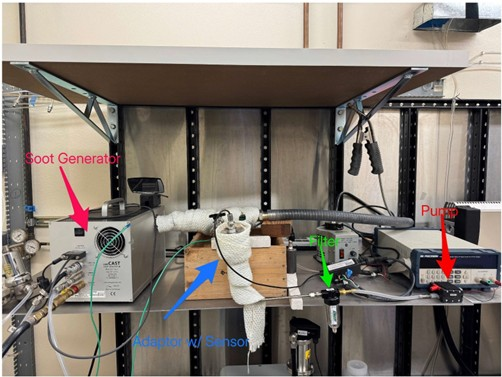
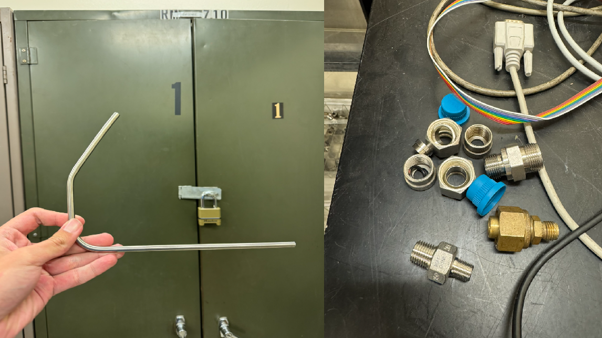
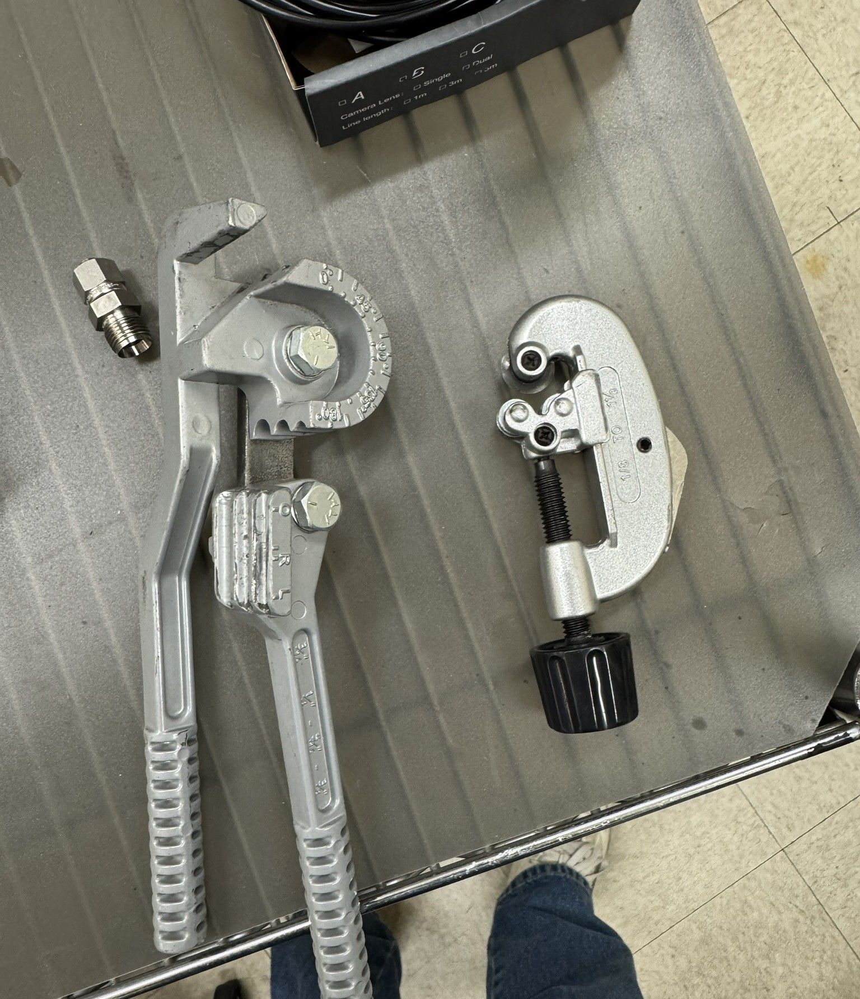
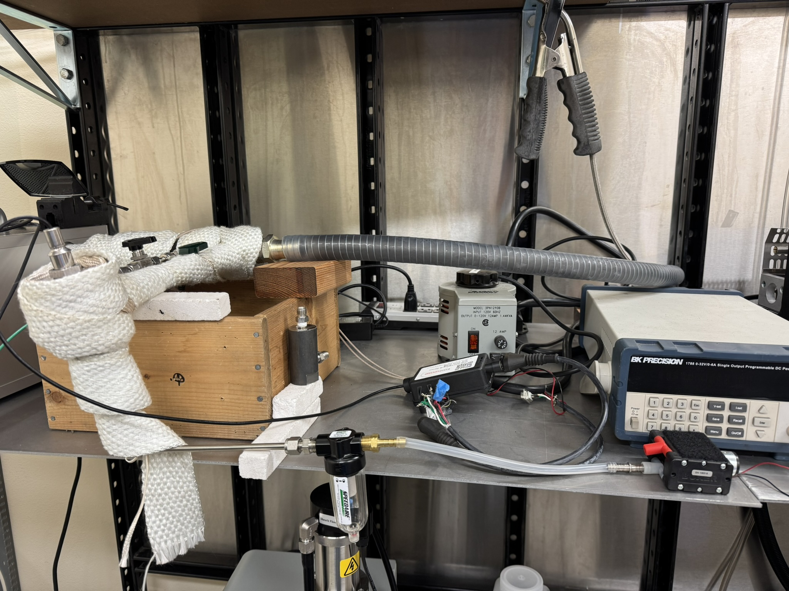

EMISENSE · MECHANICAL ENGINEERING INTERN
Low-Flow Plumbed ePM Sensor Test Rig
Designing and fabricating a low-flow plumbed test rig for testing electrostatic particulate matter (ePM) sensors under controlled flow conditions.

OVERVIEW
Building a controlled low-flow testing system.
The goal of this project was to design and assemble a low-flow plumbed test rig for evaluating electrostatic particulate matter (ePM) sensors.
The system was designed to work alongside a miniCAST soot generator and provide a controlled flow path through the sensor and filtration system. The project required selecting compatible fittings, routing tubing, and integrating the individual components into a functional laboratory setup.
SYSTEM DESIGN
Designing the flow path around existing hardware.
I designed the plumbing around the existing components of the testing system, including the miniCAST soot generator, ePM sensor adaptor, filter, and pump.
A major consideration was creating a compact and accessible flow path while accommodating differences in tubing sizes and fitting types. The final layout allowed the components to be connected while maintaining access for testing and future modifications.


PLUMBING & MANUFACTURING
Turning the flow-path design into physical hardware.
After determining the desired flow path, I fabricated the tubing and assembled the system using Swagelok compression fittings and tube-bending equipment.
Tubing was measured, cut, and bent to fit the required routing. The fabrication process required working within the physical constraints of the existing equipment while maintaining reliable connections throughout the system.


SENSOR TESTING
Creating a repeatable environment for ePM sensor testing.
Once the plumbing was assembled, the completed rig was used to provide a controlled flow environment for testing ePM sensors.
The system incorporated a 5 µm filter and low-flow pump into the flow path. NI LabVIEW was also used as part of the instrumentation and testing workflow.
TAKEAWAYS
Designing around real-world engineering constraints.
This project gave me hands-on experience designing and assembling a functional fluid system for laboratory testing. It combined component selection, tubing fabrication, mechanical design, and experimental setup into a single working system.
One of the most valuable aspects of the project was learning to design around existing hardware rather than starting with an idealized system. The final design had to account for available fittings, tubing dimensions, sensor geometry, pump requirements, and physical space.
The project also strengthened my understanding of how mechanical design decisions translate into a functioning experimental system and gave me practical experience working with professional fluid-system hardware.
TOOLS & SKILLS
LET'S CONNECT